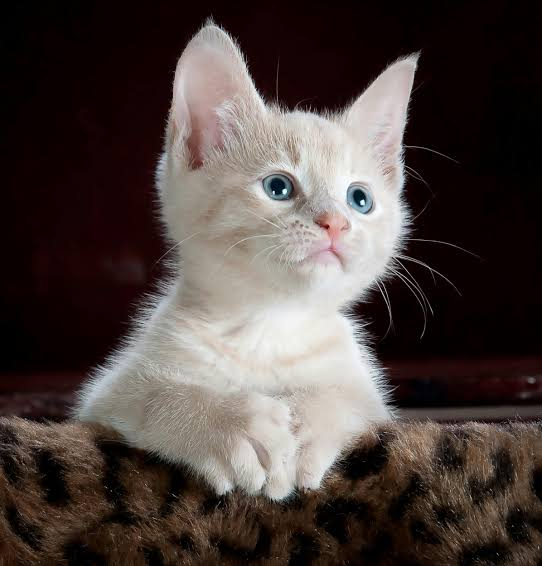
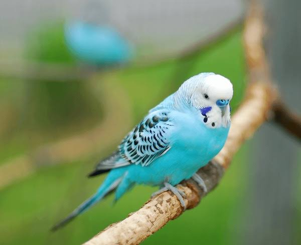

Bella is a 2-year-old golden retriever full of energy and love. Rescued from the streets she's now looking for a forever home where she can run, play and cuddle all day long.

Luna is a curious little beagle who enjoys long walks and sniffing out adventures. She's friendly with other dos and would love a home with a garden to explore.

Shadow was rescued during a rainy season, scared and hungry. Now healthy and loyal, he's looking for somone who can give him the love he's always deserved.

Milo is a calm and affectionate 3-year-old cat who loves cruling up by the window and watching the world go by. He's been waiting patiently for a quiet home with lots of cuddles.

Coco is a 5-year-old parrot with a lot to say! She's social, smart and loves music Coco is looking for a home where she can interact and be part of the family.